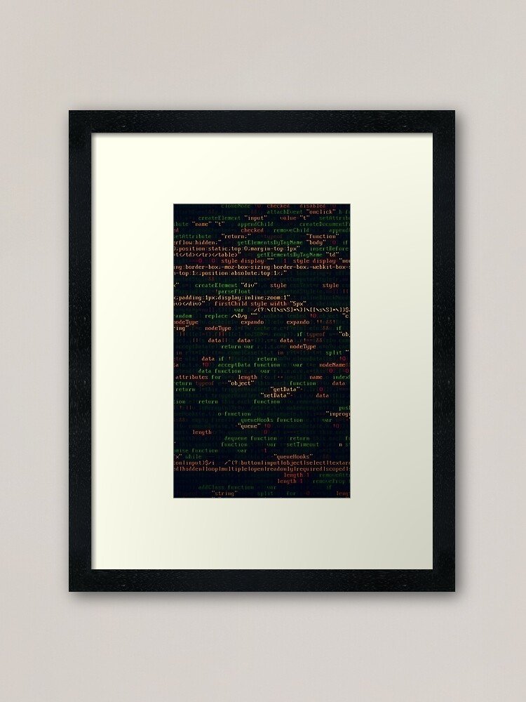

I believe my reason for taking a class in Programming is because i didn't
have the necessary skills to build My Career after finishing my University Education.
It is also clear to me that learning and doing things practical are two diffrent things
since in University they don't really teach the technical part of Programming.
So being able to specialize in Programming will enable me to advance as a Developer an be able to
work on my own as Self-employed and get a better understanding of the Programming world.
Through a list of projects i have created with active links to them below:>
These websites used onlyHTML5 and CSS